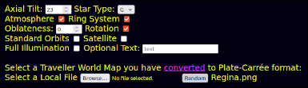

Traveller World Viewer
Traveller World Viewer
Science Fiction Adventure
in the Far Future
Traveller World Viewer
Adjust Your Pilot's Seat
This is the view from your ship's cockpit.

The planet is rendered from your custom world map. The default world image is of a typical Traveller map with the hex grid correctly placed on a celestial body. The view and perspective can be adjusted dynamically with the cursor. Dragging alters the camera angle, scrolling (Alt + drag) will zoom in and out. The frame orientation angle can be rotated by dragging the cursor in circles. This takes some practice. Double clicking on a part of the planet will center that portion in the view.
The Menu Controls

Axial Tilt
Axial tilt is in degrees from North. There are 11 options; 0° to 90° plus 23°. If you want a planet to tilt more than 90 degrees (South down), create a version of the input map flipped upside down.
Star Type
This refers to star temperature only. There are 7 types from blue to red O,B,A,F,G,K,M. This changes the star image and the lighting on the planet.
Atmosphere
This superimposes an animated cloud layer above the surface of the planet.
Ring System
This projects a Saturn Type ring system above the planet with an inclination of 30° from the ecliptic.
Standard orbits
This projects three circular orbital paths above the planet.
Rotation
This toggles rotation. Useful for tidally locked worlds and alleviating dizziness. For tidally locked worlds, set the axial tilt to zero, wait for the hot hemisphere to face the sun then stop rotation. The rotation is currently set to 40 seconds. If the world has a hot pole, set the tilt to 90°.
Full Illumination
This eliminates the night shadow. Useful for surveying the planet.
World Name Display
This projects text below the world. The text rotates unless "Full Illumination" is selected.
Full Screen / Restore
This switches from interface mode to full cockpit view. Use F11 to set your browser to full screen mode first.
Use "PrtSc" on your keyboard to capture the view. Or whichever keystrokes your OS provides.
Reload Page
To reload the page, use "Ctrl+r" or click the Red Imperial Sun Logo at the top left of the page.
Browse
This is used to select a world map image from one of your directories to display. It is recommended that you name your maps "Worldname.png". eg Earth.png Mars.png Arrakis.png
Custom Planet Maps
The viewer is obedient. It will wrap any image around the sphere as if it were a valid map. For a realistic render, select an image in Plate-Carrée projection. Countless examples are available on websites dedicated to producing them. There are also many applications where you can create your own. You can download a zipped gallery of premade maps here.
Converting Standard Traveller Maps to Plate-Carrée
There are two free online map converters available by links from the viewer page. Both require that the input map be completely and correctly cropped right to the edges.
Converting Maps from the TravellerWorlds Website

1) At The Traveller Worlds website, choose a world and select
"Map action" >> "Download PNG Format" from the drop-down menu at the top of the page.
2) Using your favorite image application, crop the map right to its points and edges.
3) Scale the image so that it is 4096 pixels or less in width. 4096px is a far greater resolution than is needed for planetary display. Larger than 4096 will be rejected.
4) Save (export) the cropped image as the name of the world in PNG format. for example: Tralfamadore.png
5) Navigate to the Icohex to Plate-Carrée Converter page.
6) Click the Browse button and select your cropped map.
The page will start immediately to convert the Icohex to Plate-Carrée.
This is a mathematically intensive process that might take up to a minute. The converted Plate-Carrée will be shown in the output window at 1:1 scale. Once the process is complete, right click the new projection and "Save as" to save the new map.
This is the final map that the viewer can use. Name it something appropriate. The default is canvas.png
Keep a collection of converted maps in a dedicated folder for future use.
Navigate to the viewer and select your converted map. This part is very quick.
Known issues
The animated 3D display is accomplished with the X3D JavaScript library. There is a difficulty with multi-layer transparent images in X3D. This manifests as some weird effects when displaying clouds and rings on the night side of the planets. When the good coders at X3D work out a solution, I will update the library. In the mean time, consider it a neurological side effect of hyperspace travel. Veteran travellers recommend a large Gin & Tonic. Cheers!
Rotation and Axial Tilt are linked mathematically. Changeing the Axial Tilt when Rotation is off yeilds unexpected results. Toggling rotation on and off resets the tilt to match the desired angle.
There are too many star types to account for all of them. In future, I may install a custom star image option.
The atmospheric cloud effect is achieved with a transparent png image. They rotate independantly of the world to foster an illusion of climate. It's there to look pretty. See transparency bug above.
The Ring system is a static image. Pretty for pretty's sake. Nothing more. Same transparency bug.
Rotation is fixed at 40 seconds. It is there to allow a game master to correctly show day/night conditions, or correctly orient a tidal locked world.
This web application is entirely JavaScript. Nothing is stored on any server or downloaded to your device except for the image you "save as". The source code is open and available in GitHub.